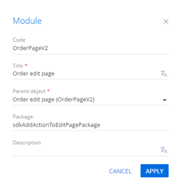
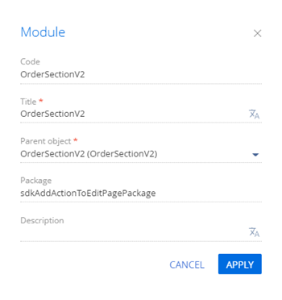

1. Создать схему замещающей модели представления страницы заказа
- Перейдите в раздел Конфигурация (Configuration) и выберите пользовательский пакет, в который будет добавлена схема.
-
На панели инструментов реестра раздела нажмите Добавить —> Замещающая модель представления (Add —> Replacing view model).
/scr_add_replacing_module.png)
-
Заполните свойства схемы.
- Код (Code) — "OrderPageV2".
- Заголовок (Title) — "Страница редактирования заказа" ("Order edit page").
- Родительский объект (Parent object) — выберите "OrderPageV2".
 -
Добавьте локализуемую строку с текстом пункта меню, который планируется добавить.
- В контекстном меню узла Локализуемые строки (Localizable strings) нажмите кнопку
/scr_add_button.png) .
. -
Заполните свойства локализуемой строки.
- Код (Code) — "InfoActionCaption".
- Значение (Value) — "Показать дату выполнения" ("Show execution date").

- Для добавления локализуемой строки нажмите Добавить (Add).
- В контекстном меню узла Локализуемые строки (Localizable strings) нажмите кнопку
-
Реализуйте логику работы пункта меню.
Для этого в свойстве methods реализуйте методы:
- isRunning() — проверяет находится ли заказ на стадии Исполнение (In progress) и определяет доступность добавленного пункта.
- showOrderInfo() — метод-обработчик действия. В информационном окне отображает планируемую дату завершения заказа. Действие страницы записи применяется к конкретному объекту, который открыт на странице. Для доступа к значениям полей объекта страницы записи в методе-обработчике действия необходимо использовать методы модели представления get() (получить значение) и set() (установить значение).
- getActions() — переопределенный базовый метод. Возвращает коллекцию действий замещающей страницы.
Исходный код схемы замещающей модели представления страницы заказа представлен ниже.
- На панели инструментов дизайнера нажмите Сохранить (Save).
В результате на страницу заказа, который находится на стадии Исполнение (In progress), добавлено действие Показать дату выполнения (Show execution date).
В режиме вертикального представления реестра пользовательское действие страницы не отображается.
Для корректного отображения действия страницы в схему замещающей модели представления раздела необходимо добавить:
- Локализуемую строку, которая содержит текст пункта меню.
- Метод, который определяет доступность пункта меню.
2. Создать схему замещающей модели представления раздела
- Перейдите в раздел Конфигурация (Configuration) и выберите пользовательский пакет, в который будет добавлена схема.
-
На панели инструментов реестра раздела нажмите Добавить —> Замещающая модель представления (Add —> Replacing view model).
-
Заполните свойства схемы.
- Код (Code) — "OrderSectionV2".
- Заголовок (Title) — "Раздел заказа" ("Order section").
- Родительский объект (Parent object) — выберите "OrderSectionV2".
 - Добавьте локализуемую строку с текстом пункта меню, который планируется добавить. Для этого выполните шаг 4 алгоритма создания схемы замещающей модели представления страницы заказа.
-
Реализуйте логику работы пункта меню. Для этого в свойстве methods реализуйте метод isRunning(), который проверяет находится ли заказ на стадии Исполнение (In progress) и определяет доступность добавленного пункта.
Исходный код схемы замещающей модели представления страницы раздела представлен ниже.
- На панели инструментов дизайнера нажмите Сохранить (Save).
Результат выполнения примера
Чтобы посмотреть результат выполнения примера:
- Очистите кэш браузера.
- Обновите страницу раздела Заказы (Orders).
В результате выполнения примера на страницу заказа добавлено действие Показать дату выполнения (Show execution date).
Если заказ находится на стадии Исполнение (In progress), то действие Показать дату выполнения (Show execution date) активно.
В результате выбора действия Показать дату выполнения (Show execution date), в информационном окне отображается планируемая дата выполнения заказа.
Если заказ не находится на стадии Исполнение (In progress), то действие Показать дату выполнения (Show execution date) неактивно.